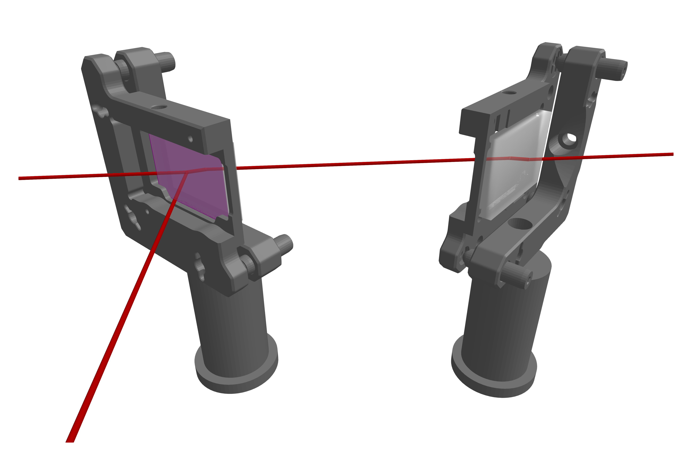
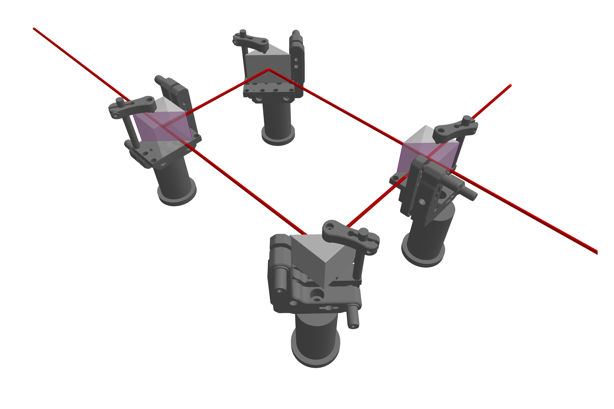

Beamsplitters
Beamsplitters are used to split beams of light, enabling the separation of an incoming beam into reflected and transmitted parts. In this package, beamsplitters are implemented via the BeamletOptics.AbstractBeamsplitter interface. This type loosely defines the interaction logic used for the tracing and retracing of optical systems that incorporate these devices. When a beam is split the new beams are referred to as the children of the parent beam. This package uses the AbstractTrees.jl interface in order to represent the splitting of BeamletOptics.AbstractBeams. For concrete implementations of splitters, skip to the Rectangular plate beamsplitter or Cube beamsplitter section.
In order to ensure consistency the following definition for the order of appended child beams is used: The transmitted beam is appended first and the reflected beam is appended second. The beam path of the parent beam stops at the splitting interface, i.e. a nothing optical interaction occurs.
Thin beamsplitter
This model acts as a quasi-coating, representing a very thin (zero-thickness) layer that directly splits the beamlets. This type is used for testing purposes mainly and to build composite objects. For optical setups it is recommended to use one of the splitter types listed below. One of two constructors can be used in order to spawn thin splitters:
If you want to learn more about how beam splitting is modeled, especially in the context of interferometer simulations, refer to the ThinBeamsplitter type docs and the specific BeamletOptics.interact3d documentation.
Plate beamsplitters
Plate beamsplitters provide a more sophisticated model by incorporating a substrate with finite thickness and BeamletOptics.RefractiveIndex. The splitter coating is modeled via a ThinBeamsplitter placed flush onto a single face of the substrate. This allows for more realistic simulation of refractive effects such as e.g. beam path displacement and optical path differences caused by the substrate's geometry. Below two concrete implementations are showcased.
Rectangular plate beamsplitter
The RectangularPlateBeamsplitter represents a planar, rectangular substrate with a partially reflective coating.
BeamletOptics.RectangularPlateBeamsplitter — MethodRectangularPlateBeamsplitter(width, height, thickness, n; reflectance=0.5)Creates a RectangularPlateBeamsplitter. The splitter is aligned with the negative y-axis. The splitter coating is centered at the origin. See also RoundPlateBeamsplitter.
Inputs
width: substrate width along the x-axis in [m]height: substrate height along the z-axis in [m]thickness: substrate thickness along the y-axis in [m]n: theRefractiveIndexof the substrate
Keywords
reflectance: defines the splitting ratio in [-], i.e. R = 0 ... 1.0
A common application involves that this type of beamsplitter is paired with a compensator plate. Below an exemplary illustration of such a setup is shown, where the beamsplitter reflects part of the incoming beam perpendiculary. A RectangularCompensatorPlate ensures that the parallel path offset is corrected.

The depicted system consist of a rectangular beamsplitter (e.g. BSW26R) in combination with a compensator plate (e.g. BCP42R). They are both mounted in KM2536 kinematic mounts. The splitter substrate thickness is exaggerated for the purpose of illustration.
Round plate beamsplitter
This variant uses a circular substrate. While components of this type often feature a wedge angle to avoid "ghost beams" in practice, e.g. the BSW26, this is not modeled here.
BeamletOptics.RoundPlateBeamsplitter — MethodRoundPlateBeamsplitter(diameter, thickness, n; reflectance=0.5)Creates a RoundPlateBeamsplitter. The splitter is aligned with the negative y-axis. The coating is centered at the origin. See also RectangularPlateBeamsplitter.
Inputs
diameter: x-z-plane substrate diameter in [m]thickness: substrate thickness along the z-axis in [m]n: theRefractiveIndexof the substrate
Keywords
reflectance: defines the splitting ratio in [-], i.e. R = 0 ... 1.0
Cube beamsplitter
The CubeBeamsplitter is composed of two RightAnglePrisms with a partially reflective interface at their internal joint. The splitting interface is represented by a ThinBeamsplitter. As with other beamsplitters in this package, the cube beamsplitter uses scalar reflection and transmission coefficients.
BeamletOptics.CubeBeamsplitter — MethodCubeBeamsplitter(leg_length, n; reflectance=0.5)Creates a CubeBeamsplitter. The cuboid is centered at the origin. The splitter coating is orientated at a 45° angle with respect to the y-axis.
Inputs
leg_length: the x-, y- and z-edge length in [m]n: theRefractiveIndexof the front and back prism
Keywords
reflectance: defines the splitting ratio in [-], i.e. R = 0 ... 1.0
A classic application of cube beamsplitters is in Mach–Zehnder interferometers, where two beamsplitters combine with additional mirrors to form two optical paths that later recombine. The figure below shows a rudimentary Mach–Zehnder arrangement using two cube beamsplitters and two RightAnglePrismMirrors:

The system is made up of two cube beamsplitters (e.g. BS013) and two mirrors mounted in KM100PM/M prism mounts with PM4 clamping arms. The GaussianBeamlet enters from the bottom left and exits at the top right. Note that due to the splitting, two beams exit the systems. Depending on the relative phase, they mutually interfere. Total optical power is conserved.
Refer to the Michelson interferometer tutorial for a detailed showcase featuring beam splitters and other components.